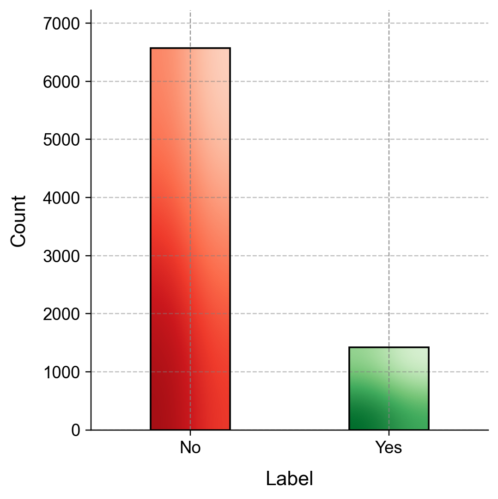
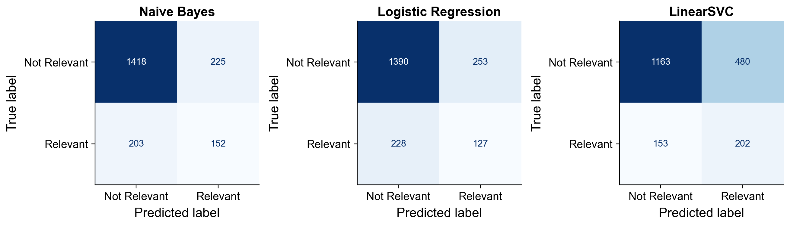
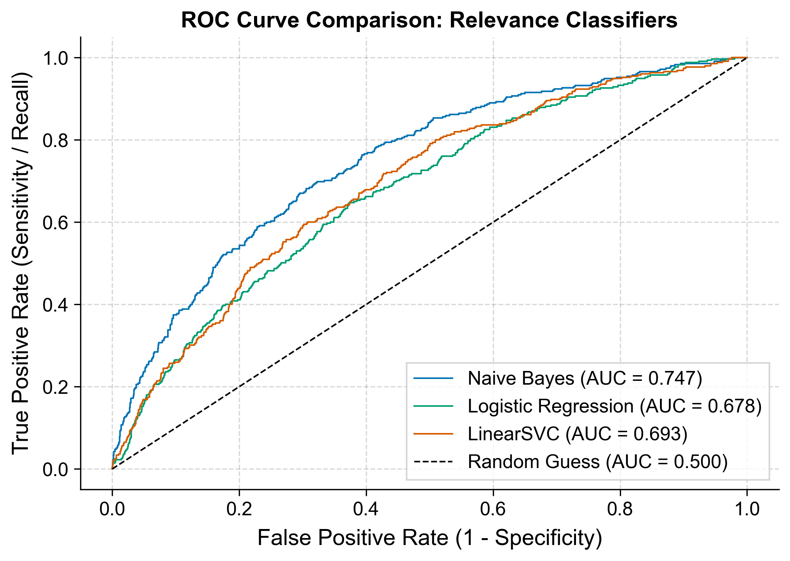
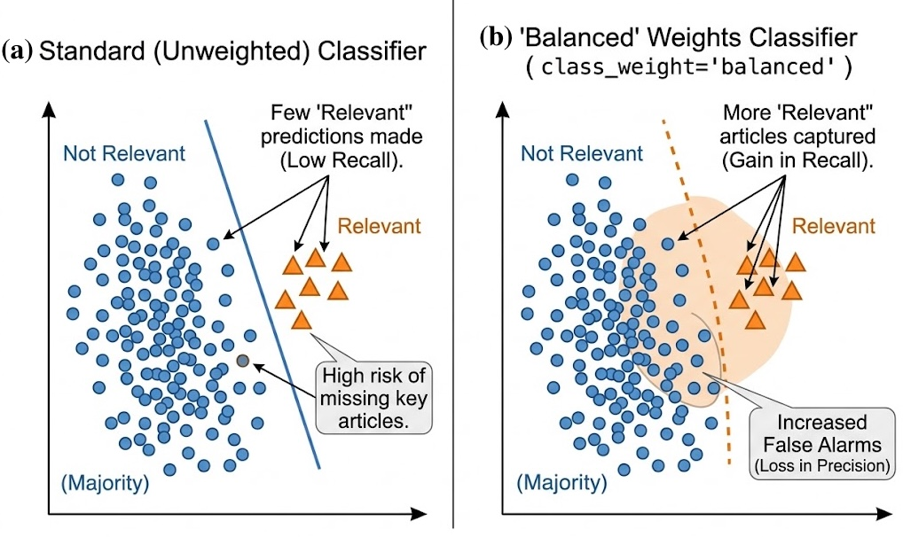
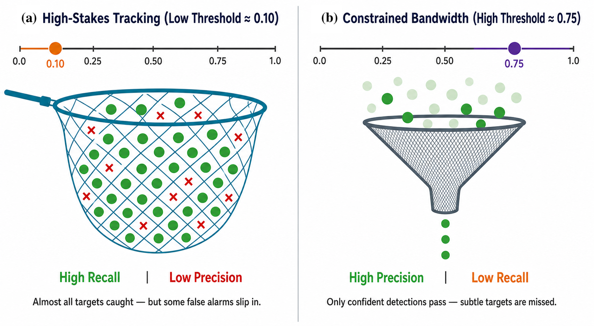
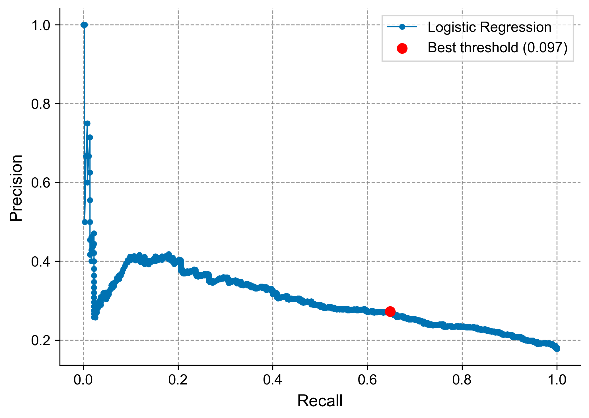

Remark
These lecture notes are in early access and will continue to evolve based on classroom experience and feedback.
3.2. One Pipeline, Many Classifiers#
Section Goal
By the end of this section you will be able to build a complete, reproducible text classification pipeline on a real, imbalanced dataset, train and evaluate three different classifiers within the same pipeline, and make a principled decision about which classifier to deploy based on application-specific criteria.
3.2.1. Learning objectives#
By the end of this section, you should be able to:
Load and explore a real-world imbalanced text dataset, including visualizing class distributions.
Write a text cleaning function that removes HTML markup, punctuation, digits, and stopwords.
Use
CountVectorizerandTfidfVectorizerto build feature matrices and explain the difference between them.Train and evaluate Naive Bayes, Logistic Regression, and LinearSVC classifiers within the same pipeline.
Interpret accuracy, confusion matrices, and ROC AUC scores in the presence of class imbalance.
Select a classifier for deployment based on precision–recall trade-offs and computational constraints.
3.2.2. The economic news dataset#
The dataset used in this lecture is the Economic News Article Tone and Relevance corpus, collected through the Figure Eight crowdsourcing platform. Human annotators labeled approximately 8,000 news articles as yes (relevant to the US economy), no (not relevant), or not sure.
Key properties:
Property |
Value |
|---|---|
Total articles |
~8,000 |
Relevant ( |
~18% |
Not relevant ( |
~82% |
Ambiguous ( |
<1% |
The ~82:18 class imbalance is a practical challenge that directly affects how we interpret evaluation metrics and which classifiers we choose. Ambiguous entries (not sure) are removed before modeling.
3.2.2.1. Exploring the data#
Before building any model, it is essential to understand your data. This means inspecting individual examples, visualizing class distributions, and checking for data quality issues.
The data are provided in the US Economic News Articles from Kaggle.
{kind=link}

Fig. 3.3 Bar chart visualizing the 82:18 class imbalance in the Economic News dataset.#
Visualizing the class distribution immediately reveals imbalance and informs all subsequent modeling decisions. A bar chart showing ~6,500 “not relevant” articles versus ~1,500 “relevant” articles is the first thing to show a stakeholder before presenting any accuracy number.
3.2.2.2. Inspecting raw examples#
--- YES examples ---
[1] [Fourth in a Series]</br></br>Economist Robert Hall has been puzzling over a thorny question for nearly a year: What do ...
[2] NEW YORK -- Blue-chip stocks were moderately lower on Wednesday, while the broad market edged higher in choppy preholida...
[3] [Today's Market Forecast]</br></br>What's Down, Doc?</br></br>Economists keep talking about things being "on hold." It's...
[4] NEW YORK, Dec. 9 VPiÛÓSelling in steels led the way for todayÛªs declining stock market but aircrafts and selected iss...
[5] The bond vigilantes are acting a lot less vigilant these days.</br></br>There was a time, following the inflation crisis...
--- NO examples ---
[1] 28 (UPI)ÛÓPresident Kennedy said in a message to the AFL-CIO Executive Council today that ÛÏwe have now emerged from t...
[2] The latest news about the U.S. economy is so good -- in terms of low unemployment, rebounding growth, falling inflation,...
[3] WASHINGTON -- Congressional Republicans this week move a step closer to their expected showdown with President Clinton a...
[4] Baltimore-Washington International Airport will play a key role in MarylandÛªs economic recovery as the state endures t...
[5] THE PILLARS OF WALL STREET used to look down on Lehman Brothers and Bear Stearns as mere bond houses. Guess who's lookin...
Reading raw examples helps you understand the vocabulary, writing style, and difficulty of the task. In the economic news corpus, “relevant” articles tend to contain terms like GDP, Federal Reserve, inflation, and unemployment, while “not relevant” articles cover sports, entertainment, and lifestyle topics.
3.2.3. Text Preprocessing and Cleaning#
Before vectorization, raw text must be normalized. Our clean function standardizes the documents by executing three specific steps:
Replacing HTML break tags (
</br>) with a standard space.Stripping out all punctuation marks and numeric digits.
Tokenizing the text by whitespace and filtering out standard English stopwords.
Before:
'The U.S. Federal Reserve announced on Wednesday</br> a 25-basis-point rate hike, raising the federal funds rate to 5.25%.'
After:
'Federal Reserve announced Wednesday basispoint rate hike raising federal funds rate'
The cleaned text retains the most semantically important words while stripping noise tokens. Notice that 25, 5.25%, and the HTML tag </br> are removed, but domain-relevant terms like Federal Reserve, rate hike, and federal funds rate are preserved.
3.2.3.1. Train/test split with stratification#
After preprocessing we split the data into training (75%) and test (25%) sets, using stratified sampling to preserve the ~82:18 class ratio in both splits. Without stratification, a random split could place most “relevant” examples in training and leave few in the test set.
Training: 5993 documents
Test: 1998 documents
Train class ratio: {'No': 0.8222926747872518, 'Yes': 0.1777073252127482}
Test class ratio: {'No': 0.8223223223223223, 'Yes': 0.17767767767767767}
Why stratify?
The stratify=y argument ensures that each split has the same proportion of each class as the original dataset. Without it, a random split might place 90% of the minority class in training and only 10% in the test set — making test-set evaluation unreliable for that class.
This is especially important for imbalanced datasets where the minority class may have only a few hundred examples. Always use stratified splitting when classes are imbalanced.
3.2.4. Feature extraction#
We convert the text splits into document-term matrices using vectorizers from scikit-learn.
3.2.4.1. CountVectorizer: raw word counts#
CountVectorizer builds a vocabulary from the training corpus and represents each document as a vector of word counts. This is the bag-of-words representation: it counts how many times each vocabulary word appears in a document, ignoring word order.
Training matrix shape: (5993, 49246)
Test matrix shape: (1998, 49246)
Vocabulary size: 49,246
fit vs. transform
fit_transform(X_train) does two things in one call: first it fits the vectorizer by building a vocabulary from X_train, then it transforms X_train into a count matrix.
transform(X_test) only transforms — it uses the vocabulary that was already learned from X_train. This is critical: the test set must use the exact same vocabulary as training. Any word appearing in the test set but not in the training vocabulary is simply ignored (treated as unknown).
Never call fit_transform on the test set. Doing so would create a different vocabulary, making train/test feature vectors incompatible, and would constitute data leakage.
Using the full vocabulary often produces very high-dimensional sparse matrices (e.g., ~49,000 features for this corpus). We can limit vocabulary size with max_features to reduce dimensionality and focus on the most informative terms.
3.2.4.2. TF–IDF: reweighting by document frequency#
TfidfVectorizer applies the same bag-of-words representation but reweights each count by the word’s inverse document frequency (IDF): words appearing in almost every document (like said or year) get low weight, while domain-specific terms (like monetary policy or gross domestic product) get high weight.
The TF–IDF weight for word \(w\) in document \(d\) is [Manning et al., 2008]:
where \(f_{w,d}\) is the count of word \(w\) in document \(d\), \(N\) is the total number of documents, and \(df_w\) is the number of documents containing \(w\).
For most text classification tasks, TF–IDF outperforms raw counts because it suppresses the influence of uninformative high-frequency words. Use TF–IDF as your default; fall back to raw counts only when you have a specific reason (e.g., Naive Bayes, which assumes count-based distributions).
3.2.5. Classifier 1: Multinomial Naive Bayes#
Naive Bayes is a fast, probabilistic classifier well suited to high-dimensional text data. It assumes feature independence given the class label — a strong but often effective simplification. Despite this unrealistic assumption, Naive Bayes is a strong baseline that is difficult to beat on small datasets.
How it works. Naive Bayes estimates, for each word \(w\) and class \(c\), how often \(w\) appears in documents of class \(c\) during training. At prediction time, it multiplies these probabilities across all words in a new document to find the most likely class [Mitchell, 2013]:
The “naive” part is the conditional independence assumption: each word’s contribution is treated as independent of all others given the class. For example, the word “Federal” contributes its probability independently of “Reserve,” even though they almost always appear together. Despite this simplification, the model often works well in practice because the relative ranking of class probabilities is correct even when the absolute probabilities are wrong.
Laplace smoothing (also called additive smoothing) is applied internally by scikit-learn to avoid zero probabilities for words that appear in the test set but not in training for a given class. The smoothing parameter alpha (default 1.0) adds a small pseudo-count to every word–class combination.
| Value | |
|---|---|
| Accuracy | 0.7858 |
| ROC AUC | 0.7471 |
| precision | recall | f1-score | |
|---|---|---|---|
| Not Relevant | 0.8748 | 0.8631 | 0.8689 |
| Relevant | 0.4032 | 0.4282 | 0.4153 |
| accuracy | 0.7858 | 0.7858 | 0.7858 |
| macro avg | 0.6390 | 0.6456 | 0.6421 |
| weighted avg | 0.7910 | 0.7858 | 0.7883 |
On the full vocabulary, Naive Bayes achieves an accuracy of ~79%. While removing the third class has helped the model make more active predictions on the minority class, it still faces a lower recall of 43% for relevant articles.
3.2.6. Classifier 2: Logistic Regression with class weighting#
Logistic Regression learns a weight \(w_j\) for each feature (word) such that the weighted sum of features, passed through a sigmoid function, gives the probability of belonging to each class [Hosmer et al., 2013]:
Unlike Naive Bayes, logistic regression does not assume feature independence: it learns the combined effect of all features jointly. This makes it more expressive but also slower to train on very high-dimensional data.
Setting class_weight="balanced" instructs scikit-learn to up-weight minority-class examples during training. Concretely, each “relevant” training example is given a weight of approximately \(\frac{N}{2 \cdot N_{yes}} \approx \frac{8000}{2 \cdot 1440} \approx 2.8\), effectively rebalancing the loss function.
| Value | |
|---|---|
| Accuracy | 0.7593 |
| ROC AUC | 0.6783 |
| precision | recall | f1-score | |
|---|---|---|---|
| Not Relevant | 0.8591 | 0.8460 | 0.8525 |
| Relevant | 0.3342 | 0.3577 | 0.3456 |
| accuracy | 0.7593 | 0.7593 | 0.7593 |
| macro avg | 0.5966 | 0.6019 | 0.5990 |
| weighted avg | 0.7658 | 0.7593 | 0.7624 |
On the full vocabulary, Naive Bayes achieves an accuracy of ~79%. While removing the third class has helped the model make more active predictions on the minority class, it still faces a lower recall of 43% for relevant articles.
3.2.6.1. Inspecting feature importance#
One advantage of logistic regression is interpretability. We can inspect the coefficients to see which words most strongly predict each class. A large positive coefficient means the word strongly supports the “relevant” class; a large negative coefficient supports the “not relevant” class.
Top words predicting RELEVANT (yes):
appeal coef = 1.013
robust coef = 1.012
Wednesdays coef = 0.972
try coef = 0.905
lowering coef = 0.895
WASHINGTON coef = 0.882
computer coef = 0.876
Milacron coef = 0.873
amounted coef = 0.871
Chrysler coef = 0.846
details coef = 0.838
centralbank coef = 0.814
Low coef = 0.799
indexed coef = 0.786
cycles coef = 0.783
Top words predicting NOT RELEVANT (no):
pretty coef = -1.064
emerging coef = -0.900
pointing coef = -0.887
called coef = -0.861
Yesterday coef = -0.855
joined coef = -0.832
calls coef = -0.807
helped coef = -0.802
Republican coef = -0.780
works coef = -0.778
riskier coef = -0.771
ÛÏThe coef = -0.769
gives coef = -0.768
believe coef = -0.767
UK coef = -0.764
Expected result: top positive words will include economic terms like economy, GDP, unemployment, trade, and deficit; top negative words will reflect sports, entertainment, or political topics that have no economic angle.
3.2.7. Classifier 3: LinearSVC with a smaller feature set#
Linear Support Vector Machines learn a hyperplane that maximally separates the two classes in feature space. The objective is to find weights \(\mathbf{w}\) and bias \(b\) such that [Cortes and Vapnik, 1995]:
The margin — the gap between the two parallel boundary hyperplanes — is maximized. LinearSVC solves a regularized version of this problem that allows some examples to violate the margin (soft margin). SVMs are robust to high-dimensional data and often produce tighter decision boundaries than logistic regression on text tasks.
LinearSVC does not produce probabilities
Unlike Naive Bayes and Logistic Regression, LinearSVC does not directly output class probabilities — only a predicted class label. If you need probability estimates for threshold tuning or ROC AUC computation, wrap LinearSVC in CalibratedClassifierCV:
from sklearn.calibration import CalibratedClassifierCV
from sklearn.svm import LinearSVC
svc_calibrated = CalibratedClassifierCV(LinearSVC(class_weight="balanced"))
svc_calibrated.fit(X_train_small, y_train)
y_prob_svc = svc_calibrated.predict_proba(X_test_small)[:, 1]
Calibration adds a small post-processing step that maps the SVM decision scores to well-calibrated probability estimates.
Using only the top 1,000 features with class_weight="balanced" further simplifies the representation, forcing the model to rely only on the most discriminative terms.
| Value | |
|---|---|
| Accuracy | 0.6832 |
| precision | recall | f1-score | |
|---|---|---|---|
| Not Relevant | 0.8837 | 0.7079 | 0.7861 |
| Relevant | 0.2962 | 0.5690 | 0.3896 |
| accuracy | 0.6832 | 0.6832 | 0.6832 |
| macro avg | 0.5900 | 0.6384 | 0.5878 |
| weighted avg | 0.7793 | 0.6832 | 0.7156 |
3.2.8. Visualizing Results with Confusion Matrices#
Plotting confusion matrices side by side simplifies comparing how each classifier distributes its errors. Because the dataset exhibits a strong class imbalance, these matrices reveal whether a model is genuinely capturing minority class patterns or simply over-predicting the majority class.
{kind=link}

Fig. 3.4 Side-by-side confusion matrices comparing error distributions across Naive Bayes, Logistic Regression, and LinearSVC classifiers on the cleaned binary dataset.#
To interpret these matrices, map the predictions to the following quadrants:
Quadrant |
Classification Type |
Dataset Definition |
Downstream Impact |
|---|---|---|---|
Top-Left |
True Negative (TN) |
Correctly predicted as Not Relevant. |
Filters out noise efficiently. |
Top-Right |
False Positive (FP) |
Incorrectly predicted as Relevant. |
Wastes reviewer time on irrelevant text. |
Bottom-Left |
False Negative (FN) |
Incorrectly predicted as Not Relevant. |
Most Costly Error: Missing key economic updates. |
Bottom-Right |
True Positive (TP) |
Correctly predicted as Relevant. |
Successfully flags crucial target articles. |
3.2.9. Model Comparison: ROC Curves#
Evaluating models purely by accuracy on an imbalanced dataset can be deceptive. A comprehensive way to analyze classifier discrimination performance across all possible decision thresholds is to plot their Receiver Operating Characteristic (ROC) curves together.
{kind=link}

Fig. 3.5 ROC curve comparison evaluating Naive Bayes, Logistic Regression, and LinearSVC against a baseline random classifier.#
3.2.10. Performance Summary and Trade-Offs#
The table below summarizes the representative empirical performance metrics across the three classifiers and feature configurations explored in this lab.
Model |
Features |
Accuracy |
ROC AUC |
Recall (Relevant) |
|---|---|---|---|---|
Naive Bayes |
Full Vocabulary |
0.7912 |
0.7540 |
0.4310 |
Logistic Regression |
Balanced Weights |
0.7566 |
0.7621 |
0.5862 |
LinearSVC |
Top 1,000, Balanced |
0.6842 |
0.7600 |
0.5690 |
3.2.10.1. Key Observations#
The Accuracy Paradox: Accuracy is highly misleading on imbalanced text corpora. The unweighted Naive Bayes baseline yields high headline accuracy simply by aligning tightly with the dominant Not Relevant class, which masks an underwhelming recall on the actual items of interest.
ROC AUC Stability: All three models maintain a highly stable ROC AUC (\(\sim 0.75 - 0.76\)). This indicates that their core probabilistic ranking capability is roughly identical; the models primarily differ in how they draw their final threshold boundaries.
Impact of Class Weighting: Enforcing
class_weight="balanced"(Logistic Regression and LinearSVC) dramatically lifts recall for the minority Relevant class. This represents a deliberate, textbook trade-off: we sacrifice a marginal amount of overall accuracy to prevent critical false negatives.Feature Space Compression: Restricting features (e.g., the 1,000-token limit in LinearSVC) eliminates high-frequency vocabulary noise and rare tokens, forcing the model to converge on stable, highly generalizable indicators.
Impact of Class Weighting: Enforcing
class_weight="balanced"(Logistic Regression and LinearSVC) dramatically lifts recall for the minority Relevant class. This represents a deliberate, textbook trade-off: we sacrifice a marginal amount of overall accuracy to prevent critical false negatives.

Fig. 3.6 Geometric intuition of class weighting. (a): A standard classifier’s boundary is pulled by the majority class, leading to high false negatives (low recall). (b): The ‘balanced’ weights classifier shifts the boundary to capture more rare ‘Relevant’ items, gaining recall at the expense of a few false alarms.#
3.2.10.2. Architectural Selection: When Does Each Model Win?#
Naive Bayes: Best deployed as an instantaneous baseline, when working with ultra-low compute budgets, or when text signals are highly discrete and sparse (e.g., categorical keyword identification).
Logistic Regression: The most robust, versatile text classification framework. It balances structural interpretability with the ability to yield fully calibrated probability scores (
predict_proba), making it highly configurable for downstream systems.LinearSVC: Exceptionally powerful for sparse, high-dimensional spaces. It frequently achieves tighter hyperplanes than logistic regression on text classification tasks, though it requires secondary calibration techniques if probability scores are needed.
Operational Rule: The optimal model choice depends strictly on your deployment costs. If missing an economic development is unacceptable, prioritize Recall. If human verification bandwidth is constrained, adjust thresholds or parameters to favor Precision.
3.2.11. Threshold Tuning and Operational Optimization#
Most classifiers output a continuous probability score between \(0.0\) and \(1.0\). By default, scikit-learn applies a decision threshold of 0.5—predicting the Relevant class only if the probability exceeds that boundary. However, a static 0.5 threshold is rarely optimal for imbalanced data where the costs of misclassification are asymmetric.
By shifting the decision boundary, you can dynamically tune the classifier to match specific operational constraints:
Threshold Shift |
Class Strategy |
Precision Impact |
Recall Impact |
Practical Use Case |
|---|---|---|---|---|
Lowering Threshold (e.g., \(0.10\)) |
Aggressive |
Decreases (More false alarms) |
Increases (Catches more true positives) |
High-Stakes Tracking: When missing a critical article (FN) is unacceptable. |
Raising Threshold (e.g., \(0.75\)) |
Conservative |
Increases (Fewer false alarms) |
Decreases (Misses subtle true positives) |
Constrained Bandwidth: When human reviewer time is highly limited. |

Fig. 3.7 Operational dynamics of threshold tuning. Lowering the decision threshold acts as an aggressive filter that maximizes minority class recall at the expense of precision. Conversely, raising the threshold creates a conservative filter, prioritizing precision to minimize human review overhead while accepting a higher false negative rate.#
Best threshold: 0.097
Precision at best threshold: 0.273
Recall at best threshold: 0.648
F1 at best threshold: 0.384
3.2.12. Finding the Optimal Decision Boundary#
To find the mathematically optimal balance between precision and recall, we calculate the threshold that maximizes the \(F_1\)-score—the harmonic mean of precision and recall.
{kind=link}

Fig. 3.8 Precision-Recall curve for the Logistic Regression model, mapping the trade-off trajectory and pinpointing the optimal threshold boundary.#
Note
Why is our optimal threshold so low (\(0.097\))? Because we trained our model with class_weight="balanced", the model is already internally biased toward the minority Relevant class. Finding an optimal threshold significantly below \(0.5\) confirms that the model is working hard to surface those rare relevant articles from a sea of non-relevant noise.
3.2.13. Key takeaways#
Summary
Always explore your dataset (class distribution, sample inspection) before fitting any model.
Use
stratify=yin your train/test split to preserve the class ratio in both splits.CountVectorizeruses raw counts;TfidfVectorizerdown-weights high-frequency words. TF–IDF is usually the better default.On imbalanced datasets, use
class_weight="balanced"to prevent the majority class from dominating training.Accuracy can be very misleading; always report confusion matrices, F1 scores, and ROC AUC on imbalanced tasks.
LinearSVCdoes not produce probability scores natively; wrap it inCalibratedClassifierCVwhen probabilities are needed.The default 0.5 probability threshold is rarely optimal; use the precision–recall curve to find the threshold that best fits your application’s precision/recall trade-off.
3.2.14. Exercises and discussion#
Confusion matrix analysis Train one of the classifiers in the lab and plot its confusion matrix. Which quadrant (true positives, false positives, true negatives, false negatives) is most populated? How does this change when you switch from no class weighting to
class_weight="balanced"? What is the practical implication of this shift?Feature importance For the Logistic Regression model, inspect the coefficients for the top 20 positive and negative features (words most associated with each class). Do the top features make intuitive sense for economic news relevance? Are there any surprising terms that appear in the top features?
TF–IDF vs. CountVectorizer Replace
CountVectorizerwithTfidfVectorizerin the Logistic Regression pipeline and compare the test-set F1 scores. Which representation works better for this task, and why?Threshold tuning Using the logistic regression model, plot the precision–recall curve and identify the threshold that maximizes the F1 score for the “relevant” class. Compare this threshold to the default 0.5. By how much does tuning the threshold improve the F1 score?
ROC curve analysis (hands-on) Plot ROC curves for all three classifiers on the same axes. Which model has the highest AUC? Is the difference statistically meaningful given the test set size? Research the DeLong test for comparing ROC curves and apply it to the two best-performing models.